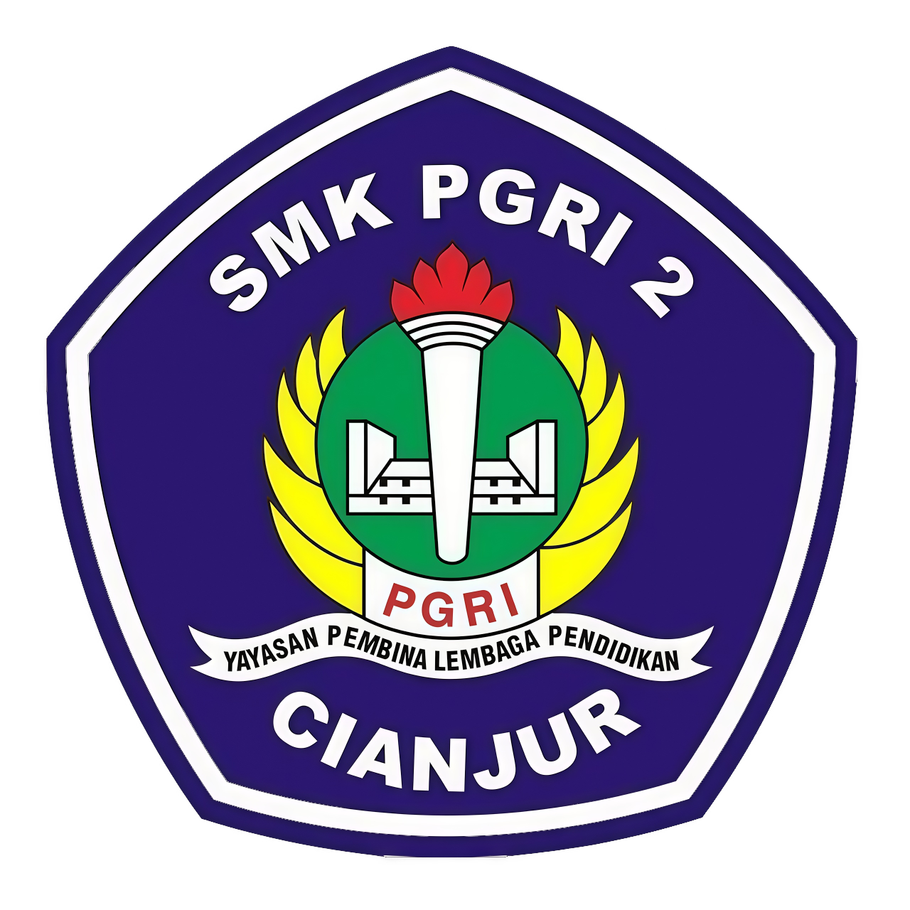
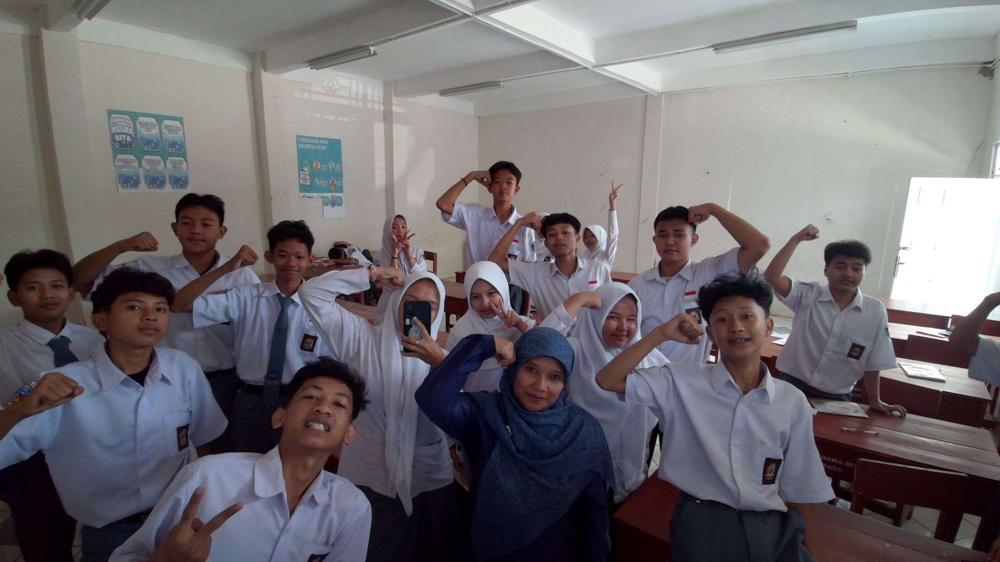
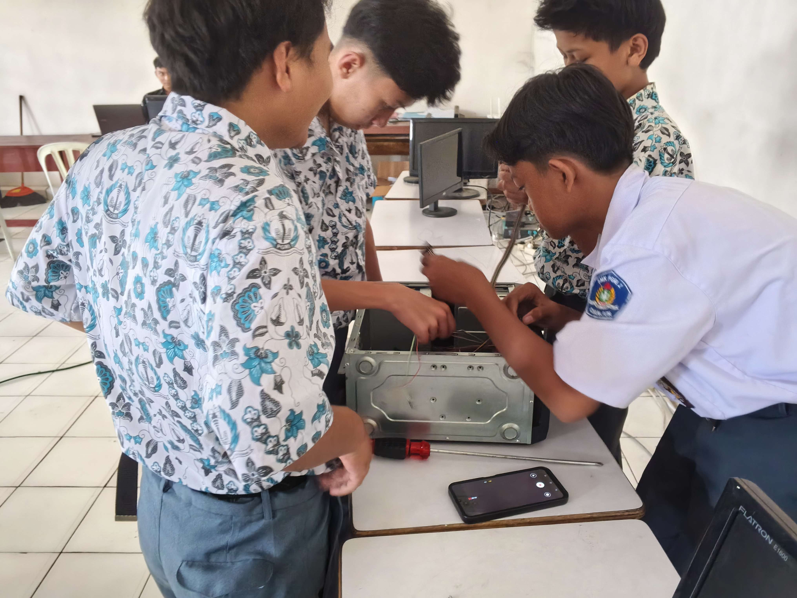
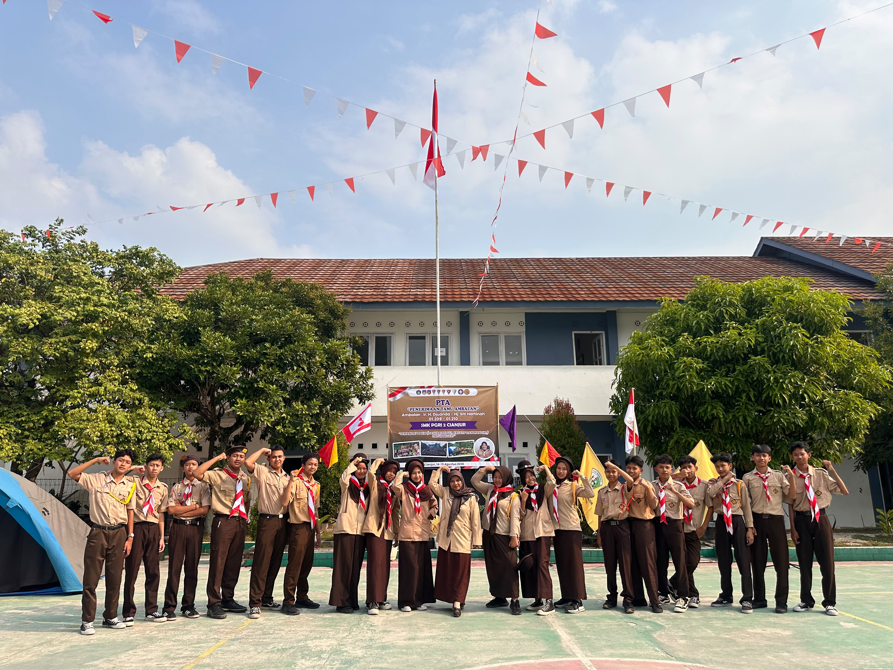
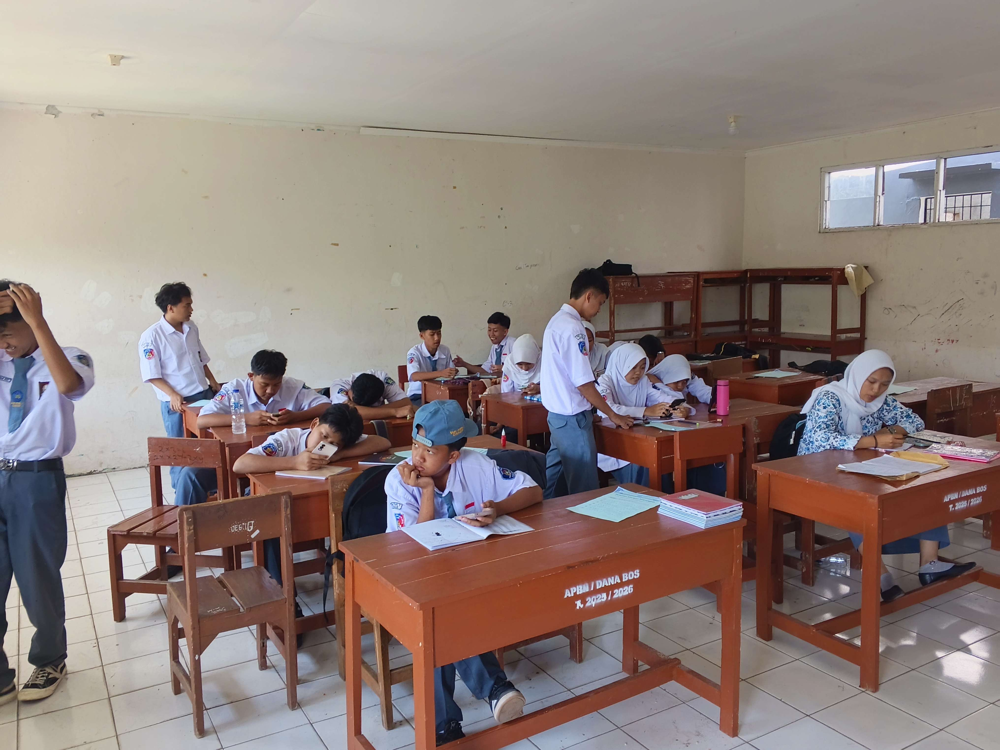

SMKS PGRI 2 CIANJUR

Pengembangan Perangkat Lunak dan GIM. Tempat tumbuh bersama dalam kreativitas, kode, dan inovasi untuk masa depan.
Kami adalah kelas PPLG yang belajar, berkarya, dan berkembang bersama melalui teknologi dan kreativitas. Selain mempelajari pemrograman, desain, dan pengembangan gim, kami juga belajar tentang kerja sama, tanggung jawab, dan saling mendukung. Kami percaya bahwa setiap anggota memiliki potensi dan karakter yang berbeda, namun dapat tumbuh bersama menjadi satu kesatuan. Teknologi, termasuk Artificial Intelligence, kami manfaatkan sebagai alat untuk membantu belajar, mengeksplorasi ide, dan menciptakan karya baru.
SMKS PGRI 2 Cianjur merupakan lembaga pendidikan kejuruan unggulan yang berdedikasi mencetak generasi profesional, berdaya saing tinggi, dan berkarakter di bidang teknologi informasi serta rekayasa perangkat lunak.



